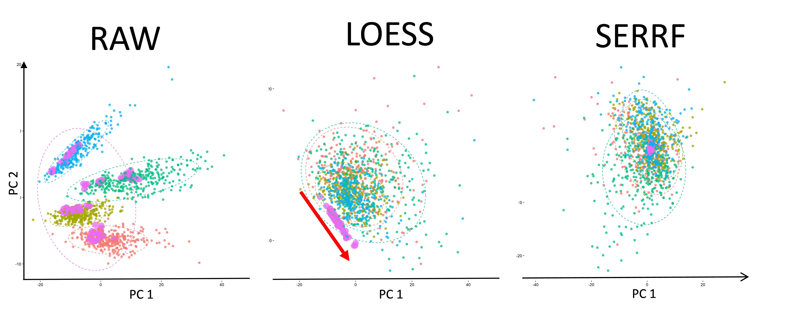

SERRF
Systematical Error Removal using Random Forest
What is SERRF?
SERRF is a QC-based sample normalization method designed for large-scale untargeted metabolomics data.
How it works?
SERRF uses a machine learning algorithm, Random Forest (Breiman, 2001), to normalize the data. For each compound, SERRF uses the QC samples to build a Random Forest model to estimate the systematical error (e.g. batch effect, day-to-day variation, etc). Then apply the model on the study samples to normalize the systematical error. In this website, we use the cross-validated relative standard deviation (a.k.a coefficient of variation) of the QCs to evalute the performance.

How SERRF differs from others?
The sample normalizations can be classified into three categories based on the types of reference samples/compounds being used, data-driven normalizations, internal standard- (IS) based normalizations, and QC-based normalizations. SERRF is a QC-based normalization method. It uses pooled aliquots of biological subject samples to normalize the metabolite intensity.
Unlike most of the QC-based methods (e.g. batch-ratio, LOESS, SVM and eigenMS normalization), SERRF assumes that the systematical error are associated with not only the batch effects and the injection order, but also the behavior of other compounds. Using RF algorithm, SERRF automatically selects correlated compounds to normalize the systematical error summarized by the QC samples for each compound.

Why use Random Forest?
The Random Forest (RF) algorithm, developed by Breiman (Breiman, 2001), are nonparametric, nonlinear, less prone to overfitting, relatively robust to outliers and noise and fast to train (Touw, et al., 2013). These attributes are desired for normalizing the high-throughput untargeted metabolomics data. In addition, the RF models can take the metabolites correlation into consideration by automatically assigning higher weights to the important compounds.
How good is SERRF?
There is no single normalization method that always outperforms others. But here are some benchmarks for SERRF.- P20 data (negative mode). Median average of 5-fold Monte-Carlo Cross-Validated QC RSD reduced from 26.5% to 6.3% (2nd best: LOESS 8.2%). Median average of External-validated QC RSD reduced from 27.1% to 9.5% (2nd best: LOESS 13.2%).
- P20 data (positive mode). Median average of 5-fold Monte-Carlo Cross-Validated QC RSD reduced from 19.7% to 3.9% (2nd best: SVM 7.4%). Median average of External-validated QC RSD reduced from 17.1% to 8.2% (2nd best: cubic 11.3%).
- ADNI data (positive mode). Median average of 5-fold Monte-Carlo Cross-Validated QC RSD reduced from 17.5% to 4.4% (2nd best: LOESS 11.3%).
- ADNI data (negative mode). Median average of 5-fold Monte-Carlo Cross-Validated QC RSD reduced from 23.2% to 7.3% (2nd best: LOESS 12.3%).
- GOLDN data (positive mode). Median average of 5-fold Monte-Carlo Cross-Validated QC RSD reduced from 21.6% to 3.4% (2nd best: LOESS 11.3%).
- GOLDN data (negative mode). Median average of 5-fold Monte-Carlo Cross-Validated QC RSD reduced from 34.1% to 8.4% (2nd best: LOESS 4.7%).